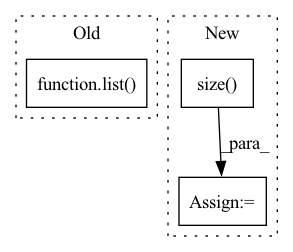

Pattern ID :27989
Before Change
// TODO: next line should not exist
values = values.squeeze(-1)
values_shape = list( values.size())
scaled_dists = -distances / self.temperature
knn_weights = torch.softmax(scaled_dists, dim=-1).unsqueeze(-1)
After Change
def get_knn_prob(self, distances, vals, device="cpu", temperature=None, **kwargs):
rcaculate the prob
vals_shape = list(vals.size() )
scaled_dists = -distances / (self.temperature if temperature is None else temperature)
knn_weights = torch.softmax(scaled_dists, dim=-1).unsqueeze(-1)
vals_shape.append(self.probability_dim)
probabilities_shape = vals_shape
// construct prob
knn_probs = torch.zeros(*probabilities_shape, device=device)In pattern: SUPERPATTERN
Frequency: 4
Non-data size: 3
Instances Fragment ID: 82898291
Project Name: njunlp/knn-box
Commit Name: 877b0290e41f5d651ae4fb74eff08946d0e3df66
Time: 2022-11-15
Author: qianfeng1024@gmail.com
File Name: knnbox/combiner/combiner.py
M Class Name: Combiner
N Class Name: Combiner
M Method Name: get_knn_prob(5)
N Method Name: get_knn_prob(4)
M Parent Class:
N Parent Class:
M File Name: knnbox/combiner/combiner.py
N File Name: knnbox/combiner/combiner.py
M Start Line: 18
M End Line: 25
N Start Line: 14
N End Line: 21
Before Change
except AttributeError:
// pack_padded_seq and pad_packed_seq store feature into data attribute
// self.output_size = list(outputs[0].data.size())
self.output_size = [[-1] + list( o.data.size()) [1:] for o in outputs]
elif isinstance(outputs, dict):
self.output_size = [[-1] + list(output.size())[1:] for _, output in outputs]
else:After Change
except AttributeError:
// pack_padded_seq and pad_packed_seq store feature into data attribute
// self.output_size = [[-1] + list(o.data.size())[1:] for o in outputs]
size = list(outputs[0].data.size() )
self.output_size = size[:batch_dim] + [-1] + size[batch_dim + 1:]
elif isinstance(outputs, dict): Fragment ID: 82898293
Project Name: tyleryep/torchinfo
Commit Name: 955962efd4dea7e9acd59662eaede66032d0cd2e
Time: 2020-04-04
Author: tyep@stanford.edu
File Name: torchsummary/torchsummary.py
M Class Name: LayerInfo
N Class Name: LayerInfo
M Method Name: calculate_output_size(3)
N Method Name: calculate_output_size(2)
M Parent Class:
N Parent Class:
M File Name: torchsummary/torchsummary.py
N File Name: torchsummary/torchsummary.py
M Start Line: 166
M End Line: 171
N Start Line: 179
N End Line: 198
Before Change
def calc_bandwidth(kernel, kernel_num=10, max_scale=2, min_scale=0.1):
// * kernel: [batch_size, particle_num, particle_num]
kernel_mean = kernel.mean(-1).max(-1)[0]
scale_list = list( np.linspace(min_scale, max_scale, kernel_num))
bandwidth_list = [(kernel_mean * scale).view(-1, 1, 1).detach() for scale in scale_list]
return bandwidth_list
After Change
def calc_bandwidth(set1, set2, kernel_num=10):
batch_size = set1.size( 0)
seq_len = set2.size(0)
set1_centre = set1.mean(-1).view(-1, 1)
set2_centre = set2.mean(-1).view(1, -1)
Fragment ID: 82898294
Project Name: deligentfool/dqn_zoo
Commit Name: 23f02caeca29f856c16efb0b1f26b0bfbf15efe9
Time: 2020-10-28
Author: 1027660817@qq.com
File Name: MMD_DQN/mmd_dqn.py
M Class Name: AnonimousClass
N Class Name: AnonimousClass
M Method Name: calc_bandwidth(3)
N Method Name: calc_bandwidth(4)
M Parent Class:
N Parent Class:
M File Name: MMD_DQN/mmd_dqn.py
N File Name: MMD_DQN/mmd_dqn.py
M Start Line: 10
M End Line: 14
N Start Line: 32
N End Line: 39
Before Change
return {
"indices": indices,
"values": value._values().numpy(),
"shape": list( value.shape) ,
}
After Change
if self.transpose_indices:
indices = indices.T
values = value._values().numpy()
shape = list(value.size() )
return {
"indices": indices,
"values": values, Fragment ID: 82898295
Project Name: jina-ai/jina
Commit Name: 13ca1a80185f4d5f5a42296cc0ba05517ddef461
Time: 2021-03-26
Author: davidbuchaca@gmail.com
File Name: jina/types/ndarray/sparse/pytorch.py
M Class Name: SparseNdArray
N Class Name: SparseNdArray
M Method Name: sparse_parser(2)
N Method Name: sparse_parser(2)
M Parent Class: BaseSparseNdArray
N Parent Class: BaseSparseNdArray
M File Name: jina/types/ndarray/sparse/pytorch.py
N File Name: jina/types/ndarray/sparse/pytorch.py
M Start Line: 69
M End Line: 76
N Start Line: 70
N End Line: 79